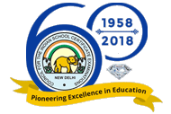

Council for the Indian School Certificate Examination
The Council has been so constituted as to secure suitable representation of: Government of India, State Governments/Union Territories in which there are Schools affiliated to the Council, the Inter-State Board for Anglo-Indian Education, the Association of Indian Universities, the Association of Heads of Anglo-Indian Schools, the Indian Public Schools’ Conference, the Association of Schools for the ISC Examination and members co-opted by the Executive Committee of the Council.
EARLY BEGINNINGS
In 1952, an All India Certificate Examinations Conference was held under the Chairmanship of Maulana Abul Kalam Azad, Minister for Education. The main purpose of the Conference was to consider the replacement of the overseas Cambridge School Certificate Examination by an All India Examination. This set the agenda for the establishment of the Council.
In October 1956 at the meeting of the Inter-State Board for Anglo-Indian Education, a proposal was adopted for the setting up of an Indian Council to administer the University of Cambridge, Local Examinations Syndicate's Examination in India and, to advise the Syndicate on the best way to adapt its examination to the needs of the country. The inaugural meeting of the Council was held on 3rd November, 1958.
In December 1967, the Council was registered as a Society under the Societies Registration Act, 1860.
In 1973, the Council was listed in the Delhi School Education Act 1973, as a body conducting "public" examinations.
THE COUNCIL'S MISSION
The Council for the Indian School Certificate Examinations is committed to serving the nation's children, through high quality educational endeavours, empowering them to contribute towards a humane, just and pluralistic society, promoting introspective living, by creating exciting learning opportunities, with a commitment to excellence.
THE ETHOS OF THE COUNCIL
- Trust and fair play.
- Minimum monitoring.
- Allowing schools to evolve own niche.
- Catering to the needs of the children.
- Giving freedom to experiment with new ideas and practices.
- Diversity and plurality - the basic strength for evolution of ideas.
- Schools to motivate pupils towards the cultivation of:
- Excellence - The Indian and Global experience.
- Values - Spiritual and cultural - to be the bed rock of the educational experience.
As a leader in the provision of world-wide educational endeavours, the Council's vast experience and wisdom is called upon in many forums such as the Council of Boards of School Education in India (COBSE), State Education Departments, the Central Board of Secondary Education (CBSE), the National Council for Educational Research and Training (NCERT), the Ministry for Human Resource Development and the Planning Commission, affirming the intrinsic integrity and credibility of the Council and the system it espouses.
EXAMINATIONS
The Council for the Indian School Certificate Examinations conducts three examinations, namely, the Indian Certificate of Secondary Education (ICSE –Class X); The Indian School Certificate (ISC - ClassXII) and the Certificate in Vocational Education (CVE - Year 12). The subject choices and syllabuses prescribed for these examinations are varied and aimed at nurturing the unique gifts of individual pupils
-
THE ICSE (CLASS X)
The Indian Certificate of Secondary Education has been designed to provide an examination in a course of general education, in accordance with the recommendations of the New Education Policy 1986, through the medium of English. Private candidates are not permitted to appear for this examination.
-
THE ISC (CLASS XII)
The Indian School Certificate Examination is an examination, through the medium of English, designed in accordance with the recommendations of the New Education Policy 1986, after a two-year course of studies beyond the Indian Certificate of Secondary Education (Year 10) examination or its equivalent examination.
-
THE C.V.E (YEAR 12)
The Certificate of Vocational Education Examination (CVE - 12) has been created as an examination, in accordance with the recommendations of the Ministry of Human Resource Development (MHRD) through the Joint Council of Vocational Education (JCVE) established under the National Policy of Education 1986. This examination can be taken by candidates after a two year course of studies beyond the Indian Certificate of Secondary Education (Year 10) examination or its equivalent examination, through the medium of English.
NATIONAL COMPETITIONS
The Council conducts, the Frank Anthony Memorial All-India Inter-School Debate and the Albert Barrow Memorial All-India Inter-School Creative Writing competitions, thereby underpinning the critical importance of creativity and the ability to articulate one's thoughts in writing and speech in school education.
AWARDS
-
THE DEROZIO AWARDS
-
NATIONAL AWARDS
-
ICT AWARD
TRAINING
The Council carries out training on a gamut of educational concerns, geared towards improving or affirming teaching practices in the classroom, new syllabi thrusts or managerial skills in education. Requests for training may be made to the Council's office.
SPECIAL MENTION
UCAS noting on the ISC Examination:
The National Admissions and Accreditation agency in the United Kingdom - UCAS (Universities and College Admission Services) has recognized the ISC at par with the Higher School qualification of the University of Scotland.
Internet:
The Council's website provided the results of the ICSE and ISC March 1999, examinations. A first by any board in India. The provision showcased the Council as a pacesetting organization world-wide.